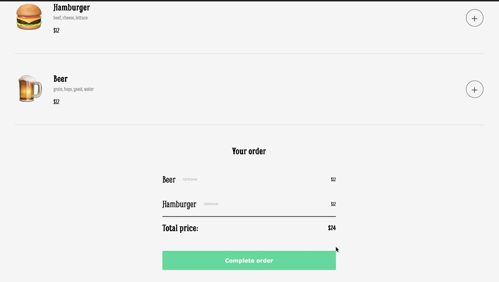
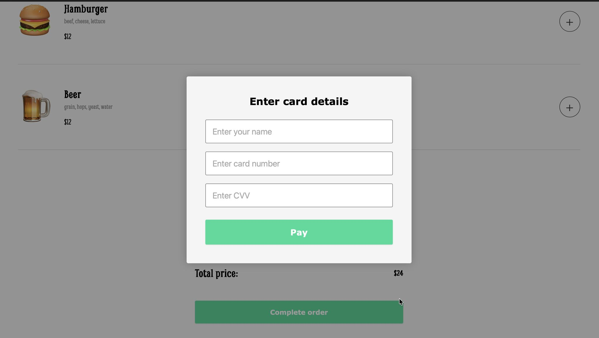
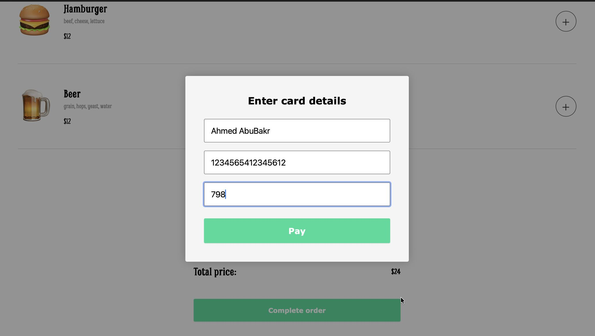

DECEMBER 10, 2025
Building Jimmy's Diner: My First Functional Ordering Engine
I just shipped my latest solo project: Jimmy's Diner—a fully functional ordering engine built entirely from scratch with Vanilla JavaScript. The goal? Move beyond static websites and build a dynamic application with real logic. No frameworks, no libraries—just raw JavaScript.

The Data Engine
Instead of hard-coding the menu in HTML, I built a system that renders the UI entirely from a data array. This approach means that if the data changes, the site updates instantly. This was a crucial learning moment—understanding how to separate data from presentation and create dynamic, data-driven interfaces.
By structuring the menu items as JavaScript objects in an array, I learned the power of mapping over data to generate HTML. This pattern is fundamental in modern web development, and building it from scratch helped me truly understand how frameworks like React handle rendering behind the scenes.
The Logic: Cart Functionality
I implemented full cart functionality—adding items, removing them, and calculating totals in real-time. This forced me to really understand how to sync the State (the data) with the UI (what the user sees).
Managing state in vanilla JavaScript taught me the importance of having a single source of truth. Every time a user adds or removes an item, I had to update the data structure and then re-render the appropriate parts of the UI. This process of thinking through state management was invaluable, and it's a concept that translates directly to more advanced frameworks.
The Payment Modal
I built a payment modal that overlays the main interface, allowing users to enter their card details to complete their order. This introduced me to modal patterns, form handling, and user experience considerations around payment flows.
The "Ghost" in the Machine 👻
Here's the best part of the learning process—it's not perfect yet! I'm currently tackling a "Ghost Cart" bug. The issue: After a user pays and completes the order, the orderArray doesn't clear properly. If you add a new item, the old items "resurrect" in the background!
The lesson: It's teaching me the hard way why "resetting state" is just as important as building it. Debugging this bug has been an incredible learning experience—it's forced me to trace through my code flow, understand the order of operations, and think critically about state management.
This bug is actually a perfect example of why building projects is so valuable. I'm learning not just how to build features, but how to debug complex issues and understand the importance of proper state cleanup. Every bug is a lesson!
What I Learned
This project was a major step forward in my learning journey. I moved from building static layouts to creating dynamic, interactive applications. I learned about:
- Data-driven UI rendering
- State management in vanilla JavaScript
- Event handling and user interactions
- Modal patterns and form handling
- The importance of proper state cleanup
- Debugging complex state-related bugs
A special shout out to my mentor Thomas Chant from Scrimba for the guidance and support throughout this project.
Check out the live demo here →

👉 Check out Scrimba's Full-Stack Developer Career Path
This is an affiliate link that helps support my learning journey at no extra cost to you. You may also receive a discount!